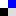
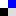

If you are going to manually include tags in your themes, go to Options > Tags and disable the automatically include tags options. This will prevent multiple sets of tags from displaying.
The template tags in this section should go inside the wordpress loop.
Tags for the current post
For a post, you can include the current tags for the post. the related tags for the post and a list of related posts for the post. The post tag templates must be within the WordPress Loop. Clicking on a local tag link displays a list of the posts within that tag; displayed using the tag.php template file, if one is present (index.php will be used if tag.php is absent.).
To customize the tags' look, you can manually add the tags to the index.php, single.php, or whichever template you use to generate the single post view in your Theme.
To include a list of tags, use the UTW_ShowTagsForCurrentPost() function, with either one of the predefined format types, or a custom format if there's something different that you'd rather do.
Example: Include a simple comma list of tags for the current post
- In the appropriate template file, add the following example:
<div class="utwtags"><?php UTW_ShowTagsForCurrentPost("commalist") ?></div>
- Save the file to your site.
- Open the
style.css style sheet file and add a class to utwtags to format the list, such as:
.utwtags {border-top: 1px solid blue;
padding: 10px 5px 0px;
font-size: 80%; font-variant:small-caps;}
- Produces
Related tags for the current post
Including related tags is pretty much the same as including tags. Related tags are found by getting the posts that match all of the tags assigned to the current post; and listing any tags assigned to those posts that aren't already assigned to the current post.
Related links are displayed with the UTW_ShowRelatedTagsForCurrentPost function.
Example: Include a simple list of related tags for the current post
- In the appropriate template file, add the following example:
<div class="utwreltags"><?php UTW_ShowRelatedTagsForCurrentPost("simplelist") ?></div>
- Save the file to your site.
- Open the
style.css style sheet file and add a class to utwreltags to format the list, such as:
.utwreltags a {font-size: 70%; color:grey; text-decoration:none}
- Produces
Related posts for the current post
The predefined formats for posts are different to the ones available for lists of tags. At the moment, there are just three predefined formats - postsimplelist, posthtmllist and postcommalist.
Related posts are displayed with the UTW_ShowRelatedPostsForCurrentPost function.
Example: Include an HTML list of related posts for the current post
- In the appropriate template file, add the following example:
<ul class="utwrelposts"><?php UTW_ShowRelatedPostsForCurrentPost("posthtmllist") ?></ul>
- Save the file to your site.
- Open the
style.css style sheet file and add a class to utwrelposts to format the list, such as:
.utwrelposts a {text-decoration:none}
- Produces
An inline tag-adder
The inline tag-adder allows putting a magical box on entries that allows adding tags without going to the post editing page. It uses AJAX. That's how magic it is. At the moment, you need to have a user level of 3 or greater to add tags. Later, I'm going to add the option of any logged in user, or indeed anyone at all to add tags... but not yet - I have to figure out some tag-spammy countermeasures first.
The function to use for this is UTW_AddTagToCurrentPost; which has a slightly different set of parameters to the other UTW_ functions.
UTW_AddTagToCurrentPost($format="") is the extent of its parameters for now. If the name of a predefined format is passed in, and the moon is in the right position (There needs to be an HTML element with an ID of tags-50, where 50 is the ID of the current post. If the element doesn't exist, then you'll see a javascript error instead of the tags being updated.); the tag list will be updated dynamically. Until I think of a convenient way to serialize and deserialze custom formats, this is going to be restricted to using predefined formats for the tag updates. Of course, if you had a custom format; you probably know enough to add it to the set of predefined formats making this point moot (;
Example: Include the magical inline tag-adder
- In the appropriate template file, add the following example:
<?php UTW_AddTagToCurrentPost("simplelist") ?>
- Set up a place to put the tags:
<span id="tags-<?php the_ID(); ?>"><?php UTW_ShowTagsForCurrentPost("simplelist") ?></span>
- Save the file to your site.
- Produces
- Entering a new tag (like "Junk Food"), and clicking the + button will add the tag to the post, then update the display to this
- Magic, eh?
The deprecated one
There's a predefined format called superajax that is kicking around.. I'm not that happy with what it does, and how it works; so I'm pretending that it doesn't exist (:
Formatting tag.php
Usually, your tag.php file will include a wordpress loop. The wordpress loop can contain the same things as in the index.php and single.php section. There are a few additional functions that are useful for the tag.php template that will be outlined here.
A Tag Set is the set of tags being displayed on the page. For /tag/sometag, the tag set is just "sometag". For /tag/sometag+anothertag or /tag/sometag|anothertag the tag set is "sometag" and "anothertag".
The template function is_tag() returns true if the current page is a tag page. This is useful for conditionally including items in the sidebar.
Display the current tag set
The UTW_ShowCurrentTagSet function is useful for creating titles on a tag page. There are two predefined formats designed for this task: tagsetsimplelist and tagsetcommalist.
Example: Include an HTML list of related posts for the current post
- In the appropriate template file, add the following example:
<div class="tagheader"><?php UTW_ShowCurrentTagSet("tagsetcommalist") ?></div>
- Save the file to your site.
- Open the
style.css style sheet file and add a class to utwrelposts to format the list, such as:
.tagheader {font-size:120%; font-weight:bolder}
- On the page /tags/Apple+Banana+Orange Produces
- On the page /tags/Apple|Banana|Orange Produces
- On the page /tags/Apple Produces
Display the tags related to the current tag set
Related tags are found by getting the posts that match all of the tags assigned to the current tag set; and listing any tags assigned to those posts that aren't already part of the current tag set.
Related links are displayed with the UTW_ShowRelatedTagsForCurrentTagSet function.
Example: Include a simple list of related tags for the current tag set
- In the appropriate template file, add the following example:
<div class="utwreltags"><?php UTW_ShowRelatedTagsForCurrentTagSet("simplelist") ?></div>
- Save the file to your site.
- Open the
style.css style sheet file and add a class to utwreltags to format the list, such as:
.utwreltags a {font-size: 70%; color:grey; text-decoration:none}
- Produces
Formatting tags.php
The tags.php file is intended for providing an overview of all tags; as opposed to tag.php which shows the posts related to a tag. The tags.php file also differs from the tag.php file in that it's created as a page template; rather than being a magic file that UTW looks for.
Create a tag archive page.
This is surprisingly easy (:
- Create a file named
tags.php in your theme folder.
- At the top of it, include this text:
<?php
/*
Template Name: Tag Archive
*/
?>
- Tag Archive will now display in the list of page templates on the 'edit page' page.
- Next, go to Write > Write Page, give the new page a title; then select 'Tag Archive' from the list of page templates, in the Page Options section. Click the 'Create New Page' button.
- Marvel at your greatness
- Add some stuff to the tags.php file, so that it does something useful
Display a tag cloud
There are predefined formats that allow changing the size, colour, or both; and there are functions for displaying tags in alphabetical order and popularity order. To display tags most popular first use the UTW_ShowWeightedTagSet function. To display tags in alphabetical order use UTW_ShowWeightedTagSetAlphabetical
The font sizes and colours are set from the Options > Tags page; and are used for all tag clouds in your site.
Example: Include a tag cloud, differentiated by size; most popular first
- In the appropriate template file, add the following example:
<?php UTW_ShowWeightedTagSet("sizedtagcloud") ?>
- Save the file to your site.
- Produces
By default, tag clouds are limited to the top 150 tags. In order to display all of the tags in the tag cloud, the $limit parameter needs to be set to 0.
Example: Include a tag cloud with colours and sizes, in alphabetical order with all of the tags
- In the appropriate template file, add the following example:
<?php UTW_ShowWeightedTagSetAlphabetical("coloredsizedtagcloud","",0) ?>
- Save the file to your site.
- Produces
Display a long-tail graph
Beware: the HTML used to generate the long-tail graph isn't XHTML compliant. (Although, if you know of a way of rendering it so that it is, let me know! (: )
For now, the formatting of the long-tail graph isn't configurable - it's a finicky little beast at the best of times.
In general, the UTW_ShowWeightedTagSet function is used for generating a long-tail. Of course, there's nothing stopping you from using the UTW_ShowWeightedTagSetAlphabetical function... it just wouldn't produce a long-tail curve.
Each bar of the long-tail graph is 5px wide; so choose the maximum number of items carefully to avoid weird layout issues caused by a super-wide long-tail graph.
Example: Display a long-tail graph
- In the appropriate template file, add the following example:
<?php UTW_ShowWeightedTagSet("weightedlongtail","",10) ?>
- Save the file to your site.
- Produces
Display a weighted bar.. thing
This isn't XHTML compliant either. (And if you know a way I can do it, so that it is; you should tell me)
The weighted bar thing is something I made up. Which is why it has a stupid non-name. It displays a bar with more popular tags in wider chunks, using the same colours as the tag cloud. This is another one where using the UTW_ShowWeightedTagSet function makes sense; and UTW_ShowWeightedTagSetAlphabetical looks a bit freakish.
This suits displaying tag sets up to about 50 tags. Much more than that and it's too compressed to look like much of anything interesting.
Example: Display a weighted bar thing
- In the appropriate template file, add the following example:
<?php UTW_ShowWeightedTagSet("weightedlinearbar") ?>
- Save the file to your site.
- Produces
Special Functionality for date.php/archive.php
This functionality looks at the date range of the current query, and displays the tags for posts that were published during that daterange.
For example, on the /archive/2005/ page, only the tags from posts in 2005 would display. Or from /archive/2004/07 tags from posts in July 2004 would display.
Nifty, eh?
There are two template functions available for this purpose: UTW_ShowTimeSensitiveWeightedTagSet and UTW_ShowTimeSensitiveWeightedTagSetAlphabetical. Both of these functions are used in the same manner as their non-date-sensitive counterparts (Except for limiting by date, of course (: ).
Predefined Formats
| Format Name | Description | Example | Wordpress loop | tag.php | tags.php |
| simplelist | List of tags separated with spaces | Papaya Pear Strawberry | + | + | |
| iconlist | List of tags separated with spaces, displayed with icons | Papaya     Pear Strawberry Pear Strawberry | + | + | |
| htmllist | List of tags in <li> html tags. Wrap in <ul> or <ol> as your whims dictate. | PapayaPearStrawberry | + | + | |
| htmllistandor | List of tags in <li> html tags, with + and/or | links as appropriate | Papaya +Pear +Strawberry + | + | + | |
| htmllisticons | As for htmllist, displayed with icons. | PapayaPearStrawberry | + | + | |
| commalist | List of tags separated with commas | Papaya, Pear, Strawberry | + | + | |
| commalisticons | List of tags separated with commas, displayed with icons. | Papaya , Pear , Strawberry | + | + | |
| commalistwithtaglabel | Comma list, but with a "Tags: " label | Tags: Papaya, Pear, Strawberry | + | + | |
| technoraticommalist | List of links to Technorati, separated with commas. | Papaya, Pear, Strawberry | + | + | |
| technoraticommalistwithlabel | As above, but includes a "Technorati Tags: " label at the start of the list. | Technorati Tags: Papaya, Pear, Strawberry | + | + | |
| technoraticommalistwithiconlabel | As above, but includes the Technorati icon at the start of the list. | Papaya, Pear, Strawberry | + | + | |
| gadabecommalist | List of links to gada.be, separated with commas. | Papaya, Pear, Strawberry | + | + | |
| andcommalist | Comma separated list of tags, with union and intersection links when appropriate*. | Papaya |, Pear |, Strawberry | | | + | |
| invisiblecommalist | Comma separated list, in a hidden span | Papaya, Pear, Strawberry | + | + | |
| tagsetsimplelist | List of tags belonging to the current tag set, separated by the current operator (and or or, depending on if it's an "and tag set" or an "or tag set"). Just the tag displays for a single tag. | Apple and Banana and Orange | | + | |
| tagsetcommalist | Like tagsetsimplelist, but with commas separating all but the last two items, with the name of the operator between the final two tags. | Apple, Banana and Orange | | + | |
| tagsettextonly | Like tagsetcommalist, but without the tags linking to tag pages. This is handy for placing in the header | Apple, Banana and Orange | | + | |
| weightedlinearbar | A stripey table that displays wider bars for more popular tags. The colours used are the same as for tag clouds. | | | | + |
| weightedlongtail | A long-tail graph of tags. Beware: not XHTML compliant. |
| | | + |
| weightedlongtailvertical | A long-tail graph of tags, going down the page. This one is XHTML compliant. Use the longtailvert CSS class to style the text of the tag labels. | | | | + |
| coloredtagcloud | A tag cloud that differentiates between the popularity of tags through colour. The colours are specified on the Options > Tags page. | Apple Banana Blueberry Cherries Grapes Lemon Mango Orange Papaya Pear Pineapple Plum Strawberry Tamarillo | | | + |
| sizedtagcloud | A tag cloud that differentiates between the popularity of tags by using different sized fonts. The font sizes are specified on the Options > Tags page. | Apple Banana Blueberry Cherries Grapes Lemon Mango Orange Papaya Pear Pineapple Plum Strawberry Tamarillo | | | + |
| coloredsizedtagcloud | A tag cloud that differentiates between the popularity of tags through colour and size. The colours and sizes are specified on the Options > Tags page. | Apple Banana Blueberry Cherries Grapes Lemon Mango Orange Papaya Pear Pineapple Plum Strawberry Tamarillo | | | + |
| coloredsizedtagcloudwithcount | Like coloredsizedtagcloud, but includes the number of times the tag is used after each tag. | Apple3 Banana3 Blueberry5 Cherries2 Grapes11 Lemon2 Mango6 Orange1 Papaya3 Pear3 Pineapple2 Plum1 Strawberry4 Tamarillo3 | | | + |
| tagcloudlist | A tag cloud that differentiates between the popularity of tags through colour and size. The colours and sizes are specified on the Options > Tags page. The tags are presented as an ordered list if you're after something a little more semantic. CSS away to your hearts content. | - Apple
- Banana
- Blueberry
- Cherries
- Grapes
- Lemon
- Mango
- Orange
- Papaya
- Pear
- Pineapple
- Plum
- Strawberry
- Tamarillo
| | | + |
| postsimplelist | List of posts separated with spaces | Something fruity My Fruit Bowl Seasonal Produce | + | + | |
| postcommalist | List of posts separated with commas | Something fruity, My Fruit Bowl, Seasonal Produce | + | + | |
| posthtmllist | List of posts in <li> tags. | Something fruityMy Fruit BowlSeasonal Produce | + | + | |
* If viewing the tag page for a single tag e.g. /tags/apple links for both union and intersection will display. If viewing the page for an intersection e.g. /tags/apple+banana then only the intersection link will display. If viewing a union page e.g. /tags/apple|banana then only the union link will display. On a non-tag page; then a big nasty gap will display - use the commalist format on these pages (: